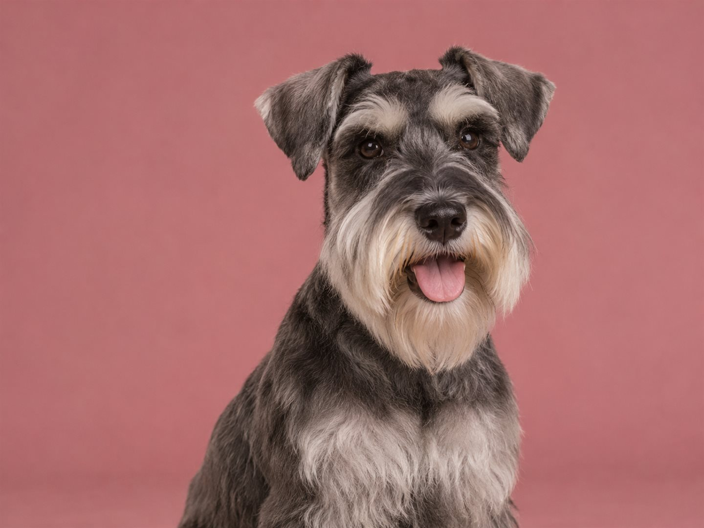
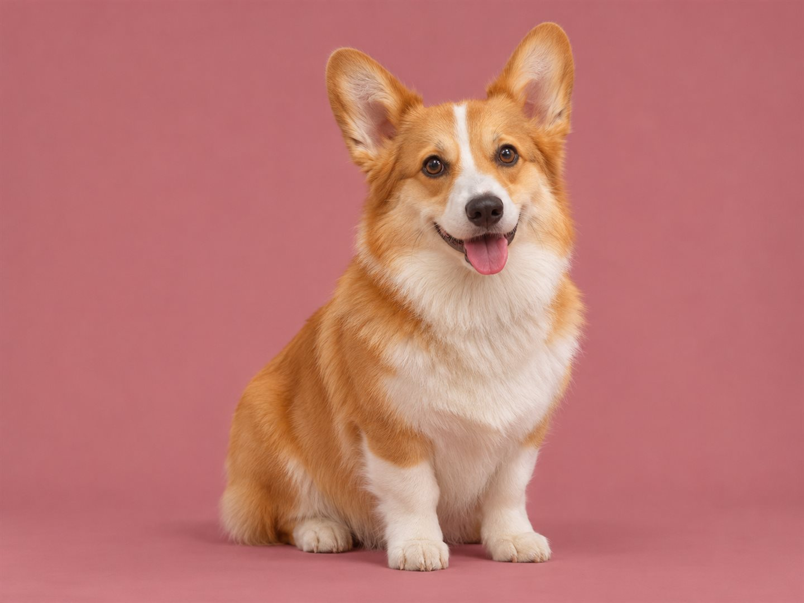
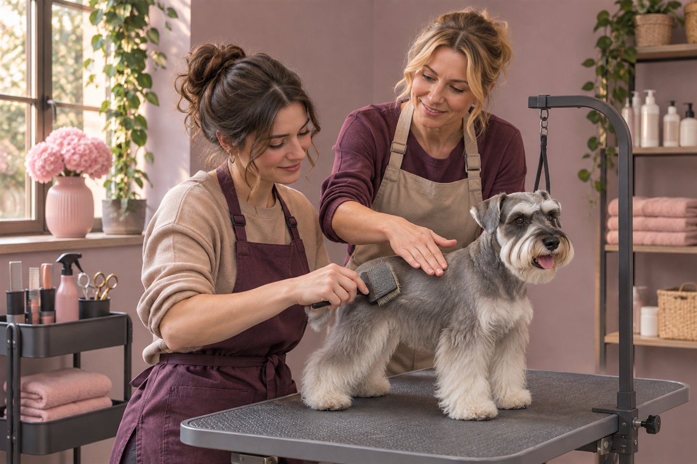
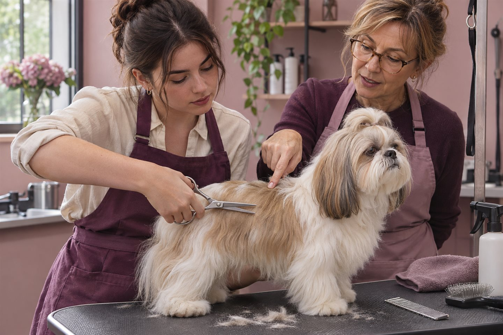
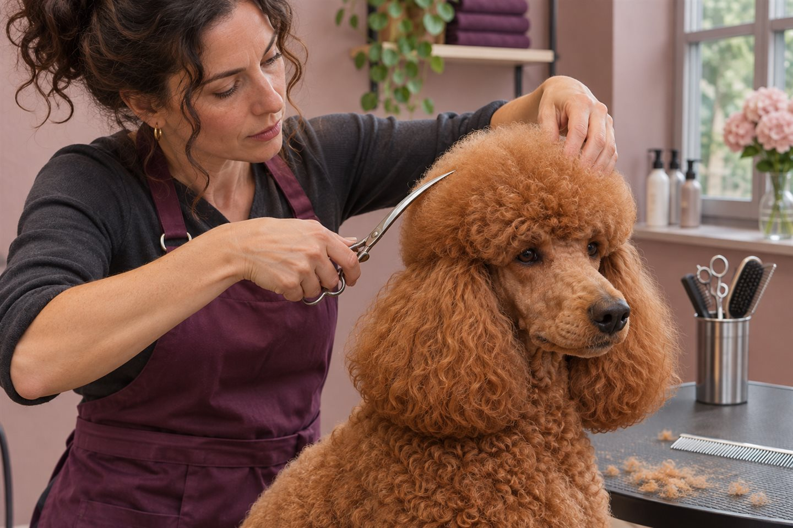

Без опыта2 дня
Проба профессии
За два занятия попробуешь мытьё, сушку и расчёсывание под присмотром наставника. Так ты поймёшь, хочется ли идти дальше.
Программа на 2 дня- Группа
- До 6 человек
- Ближайшая дата
- 16–17 января 2027
9 900 ₽
Школа груминга · Санкт-Петербург
Попробуй себя в груминге, научись стричь с нуля или отработай одну технику. Выбери курс, который подходит тебе.
Сравнить программы

Выбери цель. Покажем, с чего начать.
Три программы для разных целей.
За два занятия попробуешь мытьё, сушку и расчёсывание под присмотром наставника. Так ты поймёшь, хочется ли идти дальше.
Программа на 2 дняОсвоишь полный цикл ухода. Сделаешь четыре учебные работы и итоговую стрижку, которую сможешь включить в портфолио.
Программа на 6 днейНаучишься выстраивать силуэт и оформлять голову собаки с кудрявой шерстью. Отработаешь технику на модели и разберёшь результат с наставником.
Программа мастер-класса


Проба профессии · 2 дня
Познакомишься с профессией и попробуешь ухаживать за собакой под присмотром наставника.
День 1
Посмотришь, как устроен стол грумера, познакомишься с инструментами и попробуешь расчёсывание на модели.
Результат. Сможешь подобрать расчёску под тип шерсти и заметить, когда собаке нужна пауза.
День 2
Под присмотром наставника вымоешь собаку, высушишь шерсть и расчешешь её.
Результат. Пройдёшь базовый цикл ухода и поймёшь, хочется ли идти на курс со стрижками.
Практика второго дня
16–17 января 20272 занятия · 9 900 ₽
Курс «Старт в профессии»
От знакомства с инструментами до полного груминга под присмотром наставника. Вот что ты будешь делать и чему научишься на каждом занятии.
День 1
Подготовишь рабочее место и потренируешься держать машинку и ножницы на учебном манекене.
Результат. Сможешь подготовить стол, выбрать инструмент и распознать, когда собаке нужна пауза.
День 2
Подберёшь косметику, вымоешь, высушишь и расчешешь шерсть модели.
Результат. Подготовишь шерсть к стрижке и проверишь, что она высохла и расчёсана до основания.
День 3
Под присмотром наставника обработаешь лапы и подстрижёшь шерсть в гигиенических зонах.
Результат. Выполнишь базовый уход и поймёшь, когда стоит остановиться и позвать наставника.
День 4
Поработаешь машинкой и ножницами на корпусе, лапах и шее.
Результат. Сделаешь базовую салонную форму и научишься замечать резкие переходы длины.
День 5
На кудрявой шерсти отработаешь форму морды и связь с общим силуэтом.
Результат. Оформишь округлый контур и проверишь симметрию с двух ракурсов.
День 6
Составишь план ухода, выполнишь итоговую стрижку под наблюдением и сфотографируешь работу.
Результат. Получишь фото для портфолио и узнаешь, что стоит отработать на следующих занятиях.
Практика шестого дня
22–31 января 20276 занятий · 42 000 ₽
Форма на кудрях · 1 день
Мастер-класс для грумеров, которые уже стригут собак и хотят доработать форму головы и силуэт.
Этап 1
Оценишь, как лежит завиток, и подготовишь шерсть к стрижке.
Результат. Определишь, сколько объёма сохранить и где начать выстраивать контур.
Этап 2
Отработаешь переход от корпуса к шее, форму морды и линию головы на модели.
Результат. Свяжешь форму головы с силуэтом стрижки и проверишь симметрию.
Этап 3
Сравнишь работу с планом и вместе с наставником разберёшь переходы и линии.
Результат. Поймёшь, какие движения повторить на следующей стрижке.
6 февраля 20271 занятие · 12 500 ₽
Наставники показывают технику на модели, помогают во время практики и разбирают результат вместе с тобой.
Ведёт «Пробу профессии». Показывает, как познакомиться с собакой и безопасно провести первый уход.
Ведёт «Старт в профессии». Учит планировать уход и разбирает итоговую стрижку.
Ведёт «Форму на кудрях». Помогает выстроить силуэт и отработать переходы.
Занятия проходят очно в Санкт-Петербурге. На базовом курсе инструмент, косметика и модели входят в стоимость. В течение дня предусмотрены перерывы для людей и животных.
Да. Начнёшь с безопасности, знакомства с инструментами и работы под присмотром. Проба профессии нужна, только если хочется сначала познакомиться с работой.
После итоговой работы на курсе «Старт в профессии» школа выдаёт сертификат о прохождении курса. Для «Пробы профессии» отдельный документ не предусмотрен.
Моделей и инструмент на занятие подбирает школа. Можно взять с собой блокнот и удобную сменную обувь.
Практика с собаками под присмотром наставника входит в занятия. Отдельной стажировки в салоне после выпуска в программе нет.
Начни с услуг, которые уже уверенно выполняешь. Итоговую стрижку можно добавить в портфолио. На финальном разборе наставник подскажет, какие навыки стоит закрепить перед первыми клиентами.
Посмотри даты, длительность и полную стоимость в карточке курса. Оставь имя и удобный контакт.
Администратор уточняет наличие места, время занятий и адрес учебной площадки в Санкт-Петербурге.
Администратор сообщает, как оплатить курс. Если планы меняются, свяжись с ним, чтобы согласовать перенос.